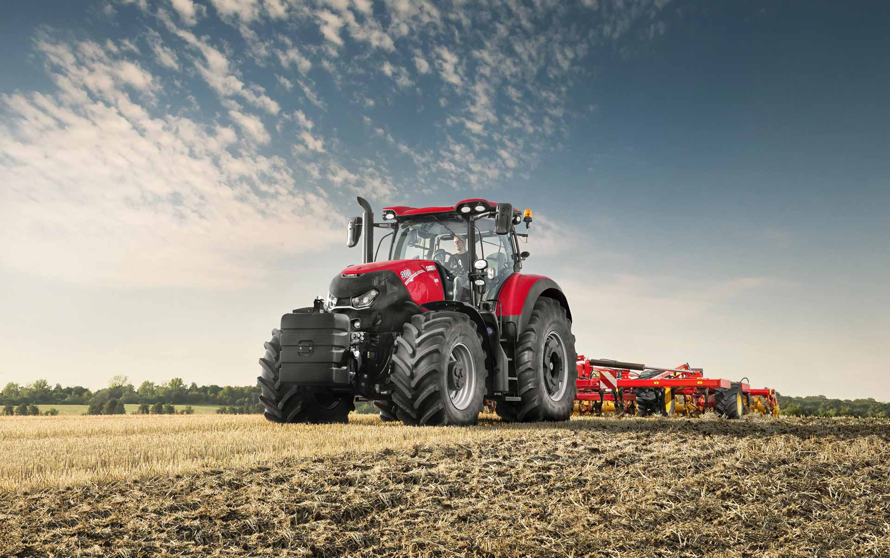

Serviços
Consultoria Ambiental
- Avaliação de impactos ambientais
- Planejamento de projetos sustentáveis
- Implementação de práticas ecológicas em empresas
Educação e Workshops
- Cursos sobre sustentabilidade
- Palestras sobre reciclagem e compostagem
- Atividades educativas para escolas
Assessoria em Certificações Ambientais
- Auxílio para obter certificações como ISO 14001
- Orientação sobre práticas de responsabilidade social
Auditorias Ambientais
- Análise de conformidade com normas ambientais
- Relatórios sobre eficiência energética
Gestão de Resíduos
- Planos de gerenciamento de resíduos
- Programas de coleta seletiva
Produtos à Venda
Produtos Recicláveis
- Embalagens biodegradáveis
- Utensílios e acessórios feitos de materiais reciclados
Itens de Uso Sustentável
- Canudos de inox ou bambu
- Sacolas reutilizáveis
Produtos de Limpeza Ecológicos
- Detergentes e desinfetantes à base de ingredientes naturais
Kit de Compostagem
- Produtos para iniciar uma compostagem em casa
Livros e Materiais Educativos
- Guias sobre práticas sustentáveis e vida ecológica